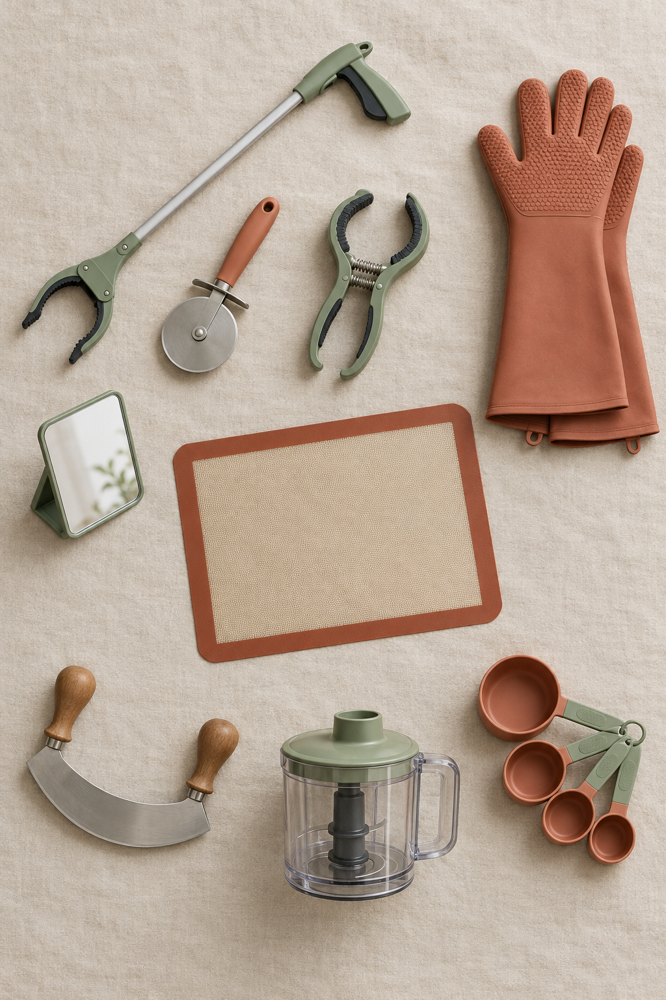

04 — Gear
Twenty-two tools that turn a normal kitchen into a workable one.
Grouped by what problem they solve — not by brand. Each entry cites the OT or wheelchair-user resource that most strongly endorsed it. No affiliate links, no sponsorships; this list is editorial.

For the prep surface
Non-slip base
Silicone baking mat
Sits under a cutting board or bowl to stop it sliding. Cheapest single upgrade to prep safety. $8–$12.
Cutting board
One-handed cutting board with spikes
Stainless-steel spikes hold a potato, onion, or apple while you cut one-handed. Recessed corners hold bowls in place.
Blade
Rocking mezzaluna
Curved blade + curved board. Uses gravity, not downward force. Best for herbs, garlic, small vegetables.
Blade
Pizza wheel with an ergonomic handle
A knife substitute for herbs, soft vegetables, dough, pancakes. Rolling motion instead of chopping.
For the stove
Visibility
Angled shaving-style mirror
Wall- or hood-mounted above the range. See into pots without leaning over hot burners.
Reach
12-inch stainless kitchen tongs
Gripped closed, they turn back-panel stove knobs without reaching across burners.
Heat
Forearm-length silicone oven mitts
Cover wrist and forearm up to the elbow. Standard mitts stop at the wrist — the exact height where hot pot rims graze a seated cook.
Range
Portable induction burner ($60–$150)
Cool cooktop, instant on/off, auto-shutoff when pan removed. Move it to any counter or cart height.
Eye protection
Kitchen safety glasses
Cheap, on a hook near the stove. For frying, sugar work, or anything spitting.
Oven
Sliding oven rack ($15–$30 aftermarket)
Pulls the whole rack out on runners so you don't reach into the hot cavity.
For reach and storage
Reacher
32-inch heavy-duty grabber
Long enough for the top shelf, grippy enough for a full bottle. Carex Ultra Grabber is the specific recommendation.
DIY reach
Zip-tie loops on cabinet + fridge handles
A loop extends the handle out and makes it hookable with a finger or a reacher.
Storage
Pull-out shelf inserts for lower cabinets
Turn a dark box into a drawer that comes to you. Wire baskets or wood — both fine.
Storage
Lazy Susan for corner cabinets
The one part of an existing cabinet you can retrofit to actually reach.
For opening things
Jars
Under-cabinet jar opener
V-shaped grip mounted under a cabinet lip. Works one-handed. Zim, EazyHold, and Black+Decker make versions.
Cans
Hands-free electric can opener
Attaches to the lid and removes it without you holding the can. Look for "One Touch" or "Kitchen Mama" style.
Bottles
Silicone jar-opening pad
A $3 grippy disc for one-handed twisting. Keep three; they migrate.
Packaging
Kitchen shears, magnetically stuck to the fridge
The right tool for every clamshell, chip bag, and vacuum-sealed anything.
For workspace and body
Surface
Rolling prep cart, 30–32 inch top, locking casters
The single best kitchen purchase. Wheels under, becomes transport, provides towel bar and lower shelf.
Lap
Bean-bag-bottom lap desk
Stable surface that molds to lap. Thermal barrier between body and anything hot.
Utensils
Weighted-handle Good Grips utensils
Counteract tremor, require less grip strength. Whole line available at any big-box store.
Body
Universal cuff with utensil pocket
Palm strap that holds a spoon, spatula, or fork when grip is limited.
A note on cost
Insurance and disability-support programs sometimes cover adaptive kitchen tools when prescribed by an occupational therapist. It's worth asking your OT or case manager to write a home-modification recommendation — many U.S. state Medicaid waivers, the VA, and vocational-rehab programs will reimburse.
Continue → Fire & burn safety